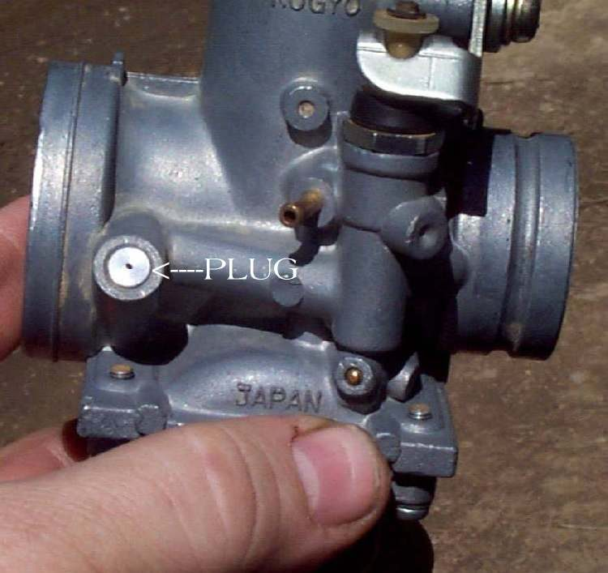
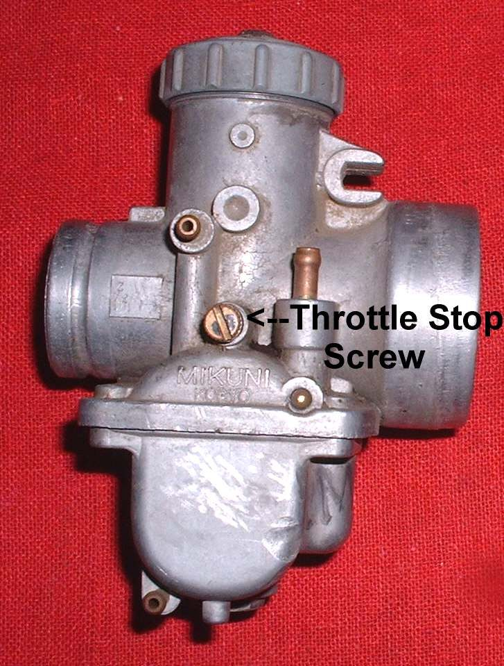
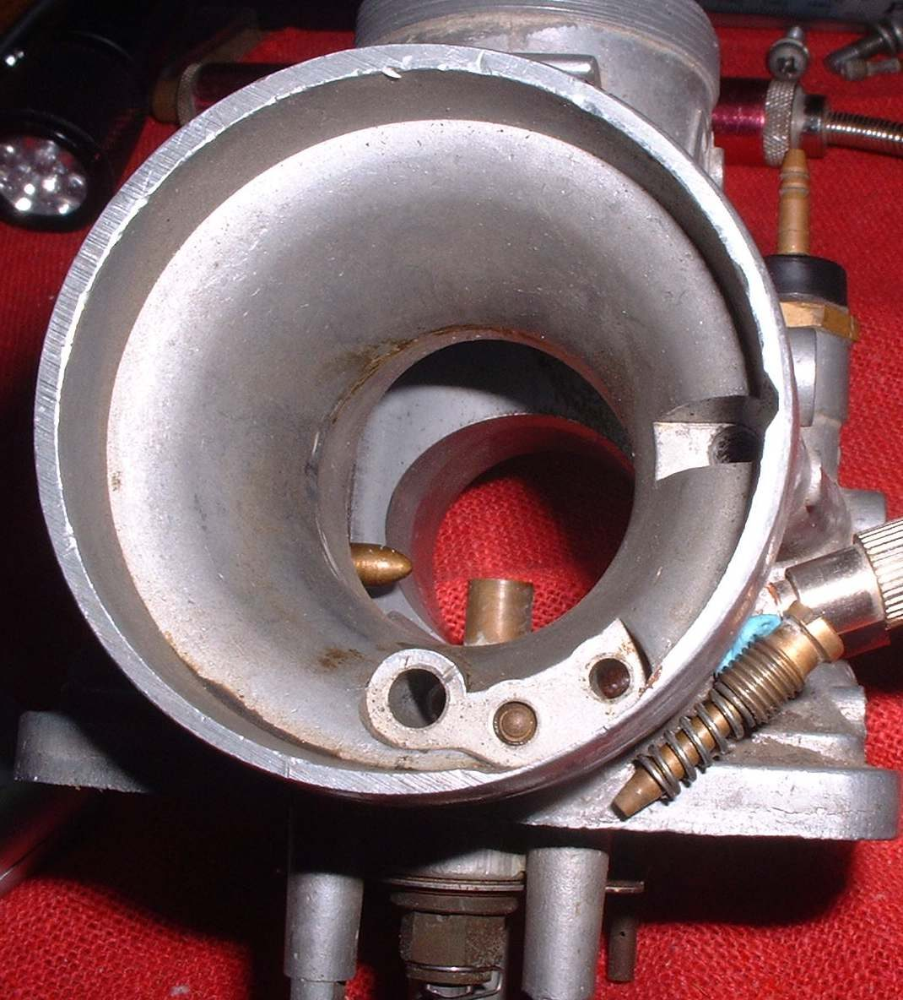
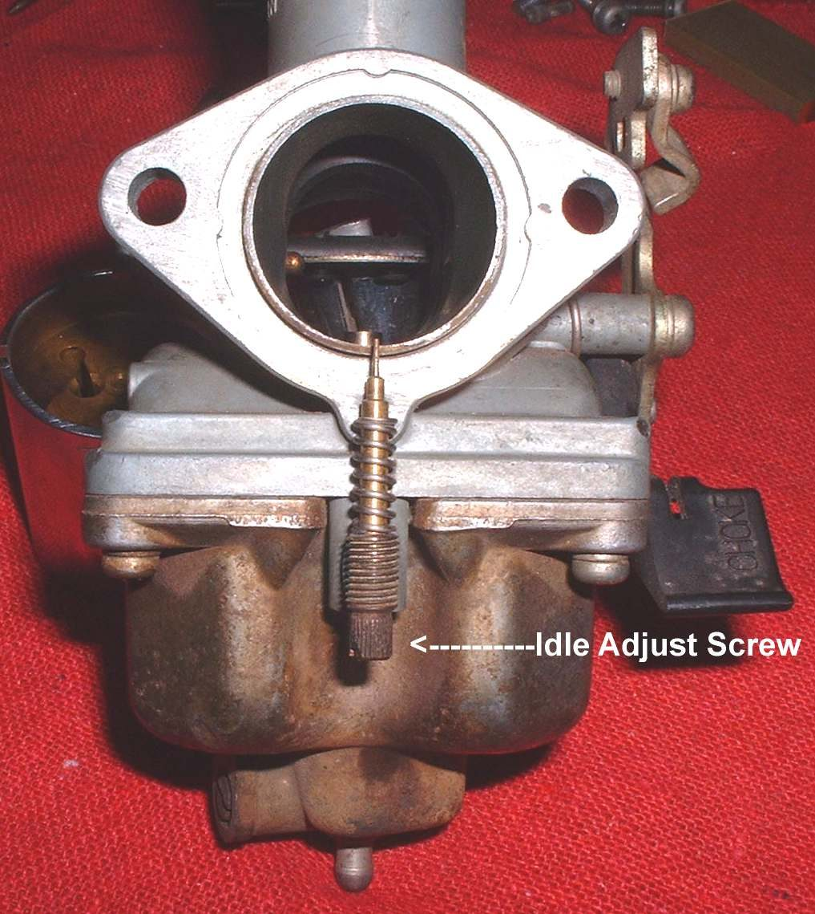
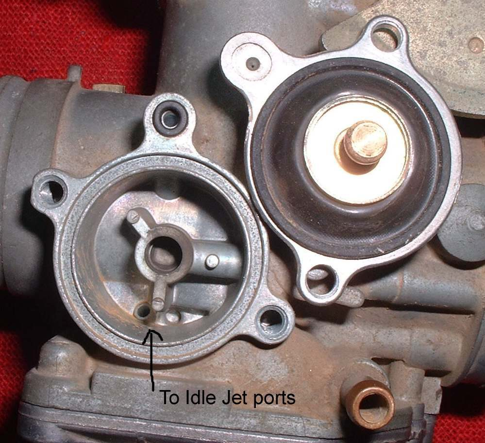
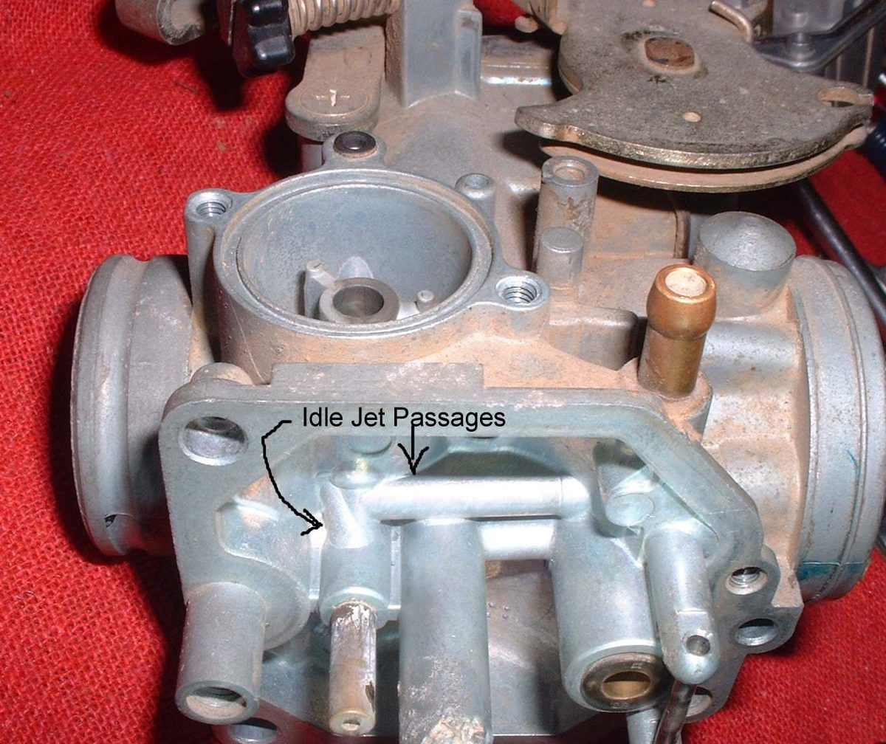

Home mechanic (basic tools) · Time: 20 to 40 min (estimate) (estimate)
A carburettor has two idle screws. The throttle stop screw (idle speed screw) holds the slide open a little to set how fast the engine idles. The pilot screw sets the idle mixture: on some carburettors it adjusts air, on others fuel. Adjustment is seldom needed. Do it only after the basics are right, because a dirty air filter, a worn plug, wrong valve clearance or an air leak all upset idle, and turning screws will not cure them.
Fuel-injected bikes: do not turn the idle screw on the throttle body. The ECU (engine control unit) controls idle by itself (K-Light 125 manual, PDF page 258). Go to Reset the idle after throttle body work instead.
Safety
- Run the engine outdoors only. Exhaust gas contains carbon monoxide, which kills in closed rooms.
- The exhaust and engine get very hot; keep hands and cables clear.
- Do not adjust while riding. Many countries limit idle mixture changes for emissions; some pilot screws carry an anti-tamper cap.
You need
- Your manual's idle speed and pilot screw starting setting. These are model-specific; this page gives no universal number.
- A tachometer (rev counter) if the bike has none. Idle by ear is not accurate enough.
Before you start
- Clean or replace the air filter.
- Check the spark plug and valve clearance are correct.
- Set throttle free play so the slide closes fully.
- Check for intake air leaks.
Steps
- Ride or run the engine until it is fully warm (normal temperature, choke fully off).
- Put the bike on its centre stand in neutral, outdoors. Air-cooled engines: point a fan at the cylinder if you will idle for long.
- Turn the throttle stop screw until the engine idles at the speed in your manual.
- Turn the pilot screw slowly in until the idle speed starts to drop or becomes rough. Note the position.
- Turn it slowly out until the idle again starts to drop or becomes rough. Note this position.
- Set the pilot screw halfway between the two points. This is usually the fastest, smoothest idle. Make changes of a quarter turn or less, and wait a few seconds after each.
- Reset idle speed with the throttle stop screw.
- Blip the throttle two or three times. The engine should return to the same idle within a second or two.
More tips
- An air screw controls how much air mixes with the idle fuel. A fuel screw meters the fuel itself. They turn in opposite senses, so check which type you have first.
- If the idle is high, then drops and dies, check for an air leak at the manifold. See Test for an intake air leak.
- Tight valve clearances also upset the idle.
- A cap or plug may cover the screw. It may be restricted to remove it where you live.
- For a different idle jet size, see Change the idle jet and read the plug.
Check your work
- Steady idle at the manual speed, warm, with no hunting.
- Turn the handlebars fully left and right: idle must not change. If it rises, the throttle cable is too tight or badly routed.
- Clean, quick throttle response from idle.
If it did not fix the problem
- The pilot screw has no effect: the pilot jet is blocked. See Clean the carburettor.
- Idle hunts or stays high: see Idle speed rises and falls on its own and Idle speed is too high.
- You must turn the pilot screw far out to get a smooth idle: suspect an air leak or a lean pilot circuit. See Engine runs hot and lean.